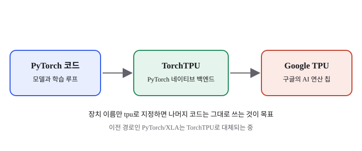
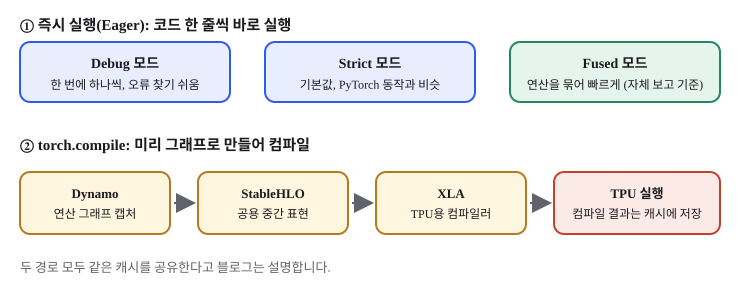

PyTorch 코드를 구글 TPU에서 그대로 돌리는 길, TorchTPU
- 구글이 10월 20일 PyTorch 컨퍼런스에서 PyTorch를 TPU 위에서 네이티브로 돌리는 백엔드 TorchTPU를 오픈소스로 공개했습니다.
- 장치 설정만 바꾸면 기존 PyTorch 코드를 거의 그대로 쓰는 것이 목표이고, 즉시 실행 모드와 컴파일 모드 두 경로를 제공합니다.
- 입문 개발자에게는 "코드를 바꾸지 않고 하드웨어를 고른다"는 발상이 왜 중요한지 이해하기 좋은 사례입니다.
AI 모델을 만들 때 가장 많이 쓰는 도구 중 하나가 PyTorch입니다. 그런데 PyTorch로 짠 코드는 대부분 엔비디아 GPU 위에서 돌아갔습니다. 그래서 구글 TPU를 쓰고 싶은 팀은 코드를 크게 고쳐야 했죠. 10월 20일 구글은 이 벽을 낮추겠다며 TorchTPU를 오픈소스로 공개했습니다.
01한눈에 보기
PyTorch를 자동차라고 생각해 보세요. 운전자(개발자)는 핸들과 페달(익숙한 코드)로 차를 몹니다. 그런데 주유소가 바뀌면 차가 못 달리는 것이 지금까지의 상황이었습니다. TorchTPU는 자동차 쪽에 "어떤 주유소에서든 연료를 받는 어댑터"를 붙이는 발상입니다. 여기서 주유소는 구글의 TPU이고, 어댑터는 백엔드입니다.

02어떻게 동작하나요
TorchTPU는 실행 방식을 두 가지로 나눠 제공합니다. 하나는 코드를 한 줄씩 바로 실행하는 즉시 실행(Eager) 방식이고, 다른 하나는 torch.compile로 연산 전체를 미리 묶어 컴파일하는 방식입니다. 구글 개발자 블로그는 이 구조를 설명하면서, 목표는 "PyTorch처럼 느껴지게" 만드는 것이라고 밝혔습니다.
즉시 실행에는 세 가지 모드가 있습니다. 디버그 모드는 연산을 하나씩 동기화하며 실행해 오류를 찾기 쉽게 하고, 기본값인 Strict 모드는 PyTorch의 기본 동작과 비슷하게 비동기로 실행합니다. Fused 모드는 여러 연산을 자동으로 묶어 메모리를 덜 오가게 합니다. 블로그는 이 모드가 Strict 대비 50%에서 100% 이상 빠르다고 자체 보고했습니다.
컴파일 경로는 torch.compile이 연산 그래프를 캡처(Dynamo)하고, 공용 중간 표현인 StableHLO로 바꾼 뒤 XLA 컴파일러가 TPU용 코드를 만드는 흐름입니다. 컴파일 결과는 캐시에 저장해 같은 코드를 다시 돌릴 때 빨라집니다.

03왜 지금 화제인가요
구글은 10월 20일 PyTorch 컨퍼런스에서 TorchTPU를 GitHub에 공개했다고 발표했습니다. 같은 날 MarkTechPost는 라이선스를 Apache 2.0으로, 최신 버전을 v0.2.0으로 전했습니다. 이후 10월 21일에는 여러 매체가 같은 내용을 다시 보도했습니다.
04관련 나라·기업
| 구분 | 이름 | 어떤 관련이 있나 |
|---|---|---|
| 기업 | TorchTPU를 만들고 오픈소스로 공개한 회사. TPU 하드웨어를 운영합니다. | |
| 기업 | Meta | PyTorch 개발팀과 함께 만든다고 MarkTechPost가 전했습니다. |
| 기업 | NVIDIA | 기존 PyTorch 생태계의 기준점이 된 GPU 회사. 이 발표를 보는 비교 대상입니다. |
| 나라 | 미국 | 세 회사 모두 미국에 본사를 둔 기업입니다. |
05기존 방식과 무엇이 다른가
| 비교 항목 | 기존 PyTorch/XLA | TorchTPU |
|---|---|---|
| 실행 방식 | 연산을 기록해 두었다가 한꺼번에 처리하는 방식 | 즉시 실행이 기본, 필요할 때 컴파일 |
| 병렬 처리 가정 | 모든 장치가 같은 동작을 한다는 SPMD 가정 중심 | 장치마다 다른 동작도 허용(MPMD 패턴 지원) |
| 사용 방법 | 코드 수정이 필요한 경우가 많음 | 장치 이름을 tpu로 지정하는 방식이 목표 |
| 커스텀 커널 | 별도 연결이 필요 | Pallas, JAX 커널을 데코레이터로 연결 |
06직접 해 보기
아래 순서는 공식 저장소 설명을 기준으로 잡은 단계입니다. 정확한 설치 명령과 코드는 저장소 README에서 직접 확인하세요. 이 글에는 확인하지 못한 코드를 옮겨 적지 않았습니다.
- 구글 TorchTPU의 GitHub 저장소(google-pytorch/torch_tpu)에서 README와 라이선스 파일을 엽니다.
- 이미 가지고 있는 작은 PyTorch 학습 스크립트를 준비합니다. 처음부터 큰 모델은 피하세요.
- README에 나온 설치 방법대로 TorchTPU를 설치합니다.
- 블로그 설명처럼 장치 지정 부분만 tpu로 바꾸고, 학습 루프는 그대로 두어 실행해 봅니다.
- 오류가 나면 먼저 디버그 모드로 실행해 어느 줄에서 멈추는지 확인합니다.
TPU 접근 권한이 없다면 클라우드 계정 설정부터 필요할 수 있습니다. 이 부분은 구글 클라우드 문서를 따르세요.
07주의할 점과 한계
- MFU 52% 같은 성능 수치는 구글 자체 보고입니다. 같은 모델을 GPU와 나란히 비교한 독립 벤치마크는 아직 확인하지 못했습니다.
- 블로그에 따르면 입력 크기가 바뀔 때 다시 컴파일하는 문제(동적 형태)는 2026년 로드맵에 남은 과제입니다.
- CUDA 전용 커널에 기대는 코드는 그대로 돌지 않을 수 있습니다. 실행 가능해도 속도를 얻으려면 손질이 필요합니다.
- Apache 2.0 라이선스는 MarkTechPost 기준입니다. 상업 사용 전에 저장소의 LICENSE 파일을 직접 확인하세요.
- 이 글의 근거 대부분은 10월 20일과 21일에 나온 보도입니다. 오늘 하루 안에 나온 새 소식은 확인하지 못했습니다.
08정리
TorchTPU가 던지는 메시지는 간단합니다. 모델 코드를 바꾸지 않고도 하드웨어를 고를 수 있어야 한다는 것입니다. 입문 개발자에게는 이 변화가 "어떤 장비에서 돌릴지"를 코드 바깥의 선택으로 바꿔 준다는 점이 가장 중요합니다.
다만 아직 성능과 호환성은 대부분 자체 보고와 초기 사용 경험에 기대고 있습니다. 직접 작은 실험을 해 보고, 결과를 스스로 비교해 보는 것이 가장 확실한 공부 방법입니다.
09참고한 글
- Google TorchTPU open source native PyTorch TPU MarkTechPost · 2026.10.20
- Google TorchTPU NVIDIA GPU lock-in 2026 Tech-Insider · 2026.10.20
- Google TorchTPU PyTorch chip portability XenoSpectrum · 2026.10.20~21
- Google open-sources TorchTPU to run native PyTorch on TPUs LetsDataScience · 2026.10.21
- Google open-sourced TorchTPU, so PyTorch on TPUs just got a lot easier Help Net Security · 2026.10.21
- TorchTPU: Running PyTorch Natively on TPUs at Google Scale Google Developers Blog · 2026.04.07 (배경 설명)
- TorchTPU, Google이 공개한 PyTorch의 네이티브 TPU 백엔드 (PyTorch 한국 사용자 모임) PyTorch KR · 2026.04.27 (요약 글)